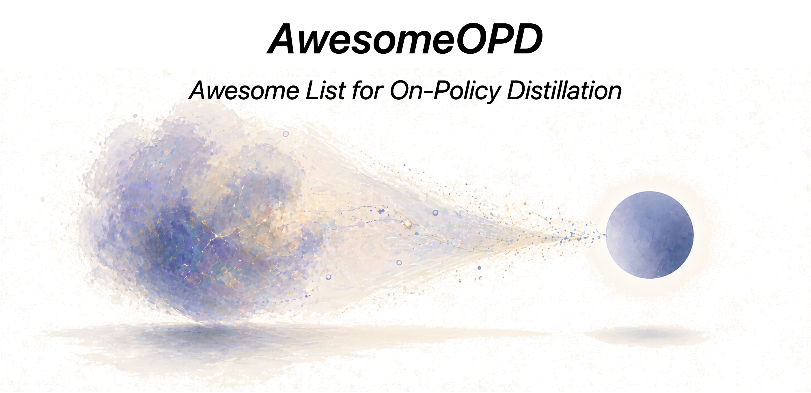

OPD Visual Guide
用最短路径理解 SFT、OPD、RL 的区别，以及图像生成里的轨迹纠偏。
打开页面这个页面把当前文件夹下的 OPD HTML 串起来：先看快速导览，再看详细学习和公式推导，最后进入图像生成后训练专题站。

这些页面都是静态 HTML，可以直接在浏览器中打开。每张卡片都跳向 `awesome-on-policy-distillation` 下的对应页面。
这组页面专门回答如何把 OPD 用在 diffusion、flow、few-step T2I 和多任务图像后训练阶段。
这里保留完整列表，方便从总入口直接跳到任意子页面。
A compact visual guide to OPD, with a focus on image generation, diffusion, and flow models.
打开页面详细学习网页，覆盖公式、核心论文、图像生成 OPD 和最新进展。
打开页面从基础概率和 KL 出发，推导 OPD、GKD、ExOPD 与 diffusion/flow OPD 公式。
打开页面专题入口，汇总 PWC 信息、论文地图、后训练配方和研究方向。
打开页面解释 OPD 如何从 LLM token rollout 迁移到 diffusion / flow latent trajectory。
打开页面说明 OPD 为什么适合 few-step / one-step 图像生成后训练。
打开页面覆盖 rollout、teacher、loss、eval、停止条件等工程流程。
打开页面研究 OPD 如何缓解多目标图像 RL 的 seesaw effect、reward hacking 和遗忘。
打开页面把 LLM OPD 的稳定性研究转译到图像生成 OPD 的诊断和修复动作。
打开页面